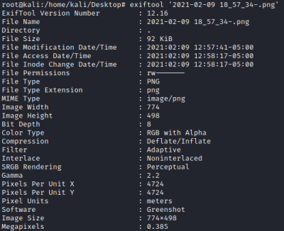

Exiftool (structured data in documents)
Site:
https://exiftool.org/ExifTool is a
platform-independent Perl library (Runs on Windows, Linux, and macOS) useful to read metadata of files
files supported list:
https://exiftool.org/#supportedSometime in
CTFs some informations are hidden in images, GIFs etc..
on Linuxinstall:
sudo apt install libimage-exiftool-perl
use
 on WindowsRead the application documentation → double-click on "exiftool(-k).exe"
command-line use → rename to "exiftool.exe"
It is possible to specify multiple files
• Extract information from a file
A basic command to extract all metadata from a file named a.jpg.
example: Microsoft Office inserts usernames and author information in specific fields of the files it generates!